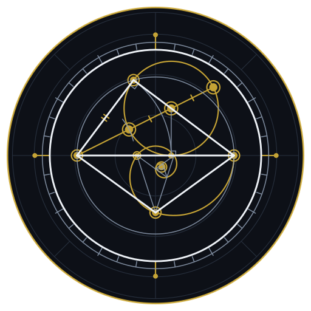

H. E. Huntley¶

H. E. Huntley (1892–1975) captured the quiet elegance of mathematical beauty in The Divine Proportion (1970), weaving together the golden section \(\phi\), Fibonacci numbers, Kepler’s right triangle, and equiangular spirals into a classic English anthology. From the 3–4–5 Egyptian triangle’s angle-bisector circle to three mutually orthogonal golden rectangles spanning the icosahedron, Huntley illuminated geometry through economy and surprise. This mathematical catalog formalizes his thirteen chapters in exact symbolic algebra over \(\mathbb{Q}(\sqrt{5})\).
Inside This Reference¶
Dover Monograph · 1970 · 13 Chapters · Exact SymPy Concordance
The Divine Proportion — Mathematical Catalog & Concordance — A complete thirteen-chapter atomic catalog (HUNT-02.01 through HUNT-13.01) indexing Huntley’s golden ellipse, pill-maker tangency locus, two-plate glass reflections, Pascal’s Fibonacci diagonals, and spira mirabilis, cross-referenced across Euclid, Knott, and Posamentier.
Key Features¶
Exact \(\mathbb{Q}(\sqrt{5})\) Algebra
Every geometric construction and identity is modeled in 100% exact SymPy arithmetic over \(\phi = \frac{1+\sqrt{5}}{2}\) and \(\phi' = \frac{1-\sqrt{5}}{2}\), free of floating-point approximation.
Thirteen-Chapter Atomic Index
Each theorem and curiosity—from Euclid II.11 / VI.30 and the \(72^\circ\text{-}72^\circ\text{-}36^\circ\) Golden Triangle to Cassini’s dissection—is tagged with exact page references and algebraic invariants.
Cross-Corpus Concordance
Trace how Huntley’s 1970 Dover anthology bridges classical Greek constructions directly to modern compendia by Ron Knott, Alexander Bogomolny, and Posamentier & Lehmann.
Reference & Project¶
Scholarly Apparatus
People — Biographical profiles of H. E. Huntley and cited mathematicians
Bibliography — Primary 1970 Dover edition and historical literature
Glossary — Key definitions of golden gnomons, Lucas sequences, and logarithmic spirals
About This Project
About & Using This Edition — Scope, symbolic methodology, and navigation guide
Project Log & Todos — Curated development notes and ongoing tasks
Changelog & Connect — Release history and GEOMETOR community links